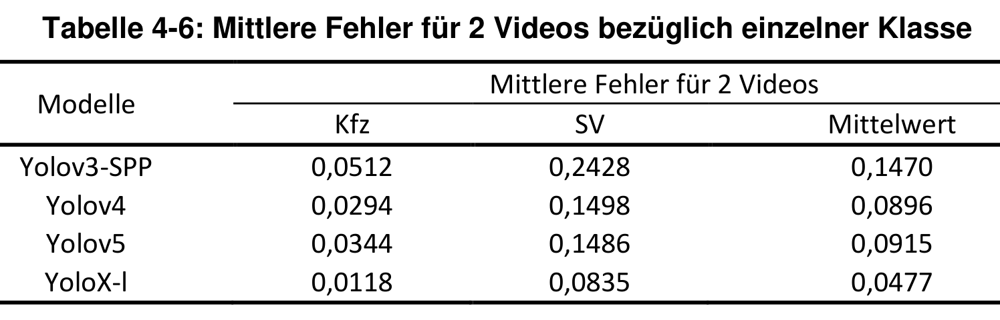
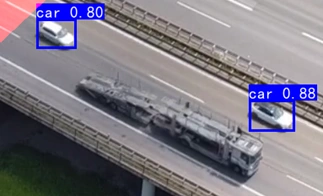
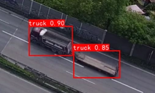
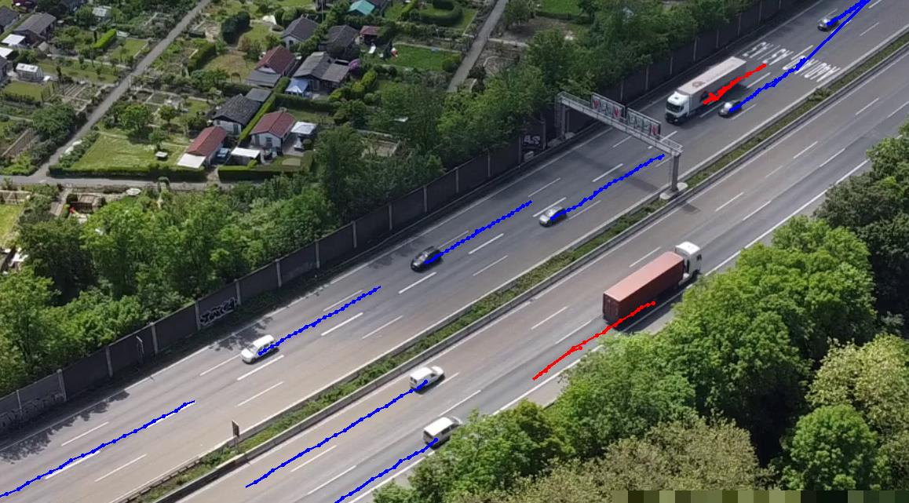

Method at a glance
How it works
- 01Detect vehiclesProduce vehicle boxes and classes with a fine-tuned YOLO detector.
- 02Associate over timeLink detections using position, road direction, and a short frame history.
- 03Count by directionDetect transitions through control regions and aggregate cars and heavy vehicles.
Project workflow schematic.
Data and detector comparison
The fine-tuned comparison used YOLOv3-SPP, YOLOv4, YOLOv5, and YOLOX-l, starting from COCO-pretrained weights and adapting them on VisDrone. A COCO-pretrained YOLOX-x model was also evaluated as a baseline. The documented fine-tuning setup used 640 × 640 images and 100 epochs.
For evaluation, I annotated two A40 highway drone videos and reconciled the source taxonomies into car and heavy-vehicle categories. The custom videos contain 1,875 frames each: A40-01 lasts 2 minutes 30 seconds at 12.5 FPS, while A40-02 lasts 1 minute 15 seconds at 25 FPS. The work separates the public fine-tuning data from the manually annotated target-domain evaluation data.
Model and tracking structure
The detectors are one-stage convolutional networks with multi-scale prediction heads. The comparison spans YOLOv3’s Darknet-53/SPP formulation, later CSP-style detector families, and YOLOX’s anchor-free design. Their outputs are bounding boxes and classes, which feed the same downstream analysis pipeline.
After investigating DeepSORT, I implemented a tracker tailored to the road geometry. It links detections using spatial distance and lane direction over a short history of up to five previous frames. A reference point at approximately one-third of box height helps reduce lane-association errors caused by different vehicle heights. The counter uses automatically constructed control regions and state transitions along each track to avoid counting the same vehicle repeatedly.
Evaluate the traffic task, not only detection
Detection was evaluated using precision–recall behavior, mAP, and F1 measures; traffic analysis was evaluated using per-class counting errors. A strong detector was not automatically the strongest complete counting system.
In the thesis’s two-video comparison, YOLOv4 gave the best detection performance under the reported criterion, while YOLOX-l produced the lowest mean class-wise traffic-counting error, approximately 4.77%. This result belongs to the particular videos and aggregation used in the thesis, rather than a general ranking of detector families.



Why counting needs its own error analysis
My thesis defense distinguishes total counting error, errors for each vehicle class, and separate overcounts and undercounts. A correct total can hide mistakes when errors cancel across classes or directions. This is why the evaluation goes beyond a single detector score.
The presentation’s examples show class confusion and multiple detections on the same vehicle. The tracker and control-region logic determine how those frame-level errors affect the final traffic survey. The practical lesson was to evaluate the full detection–tracking–counting chain, including road geometry, temporal association and class consistency.




Project visuals


Related resources
Based on my written traffic-analysis thesis and the 24-slide defense, especially slides 8–20. The defense’s rounded summary statements are not used as additional benchmark scores. The numerical comparison remains tied to the thesis’s two annotated videos and class-wise counting definition.